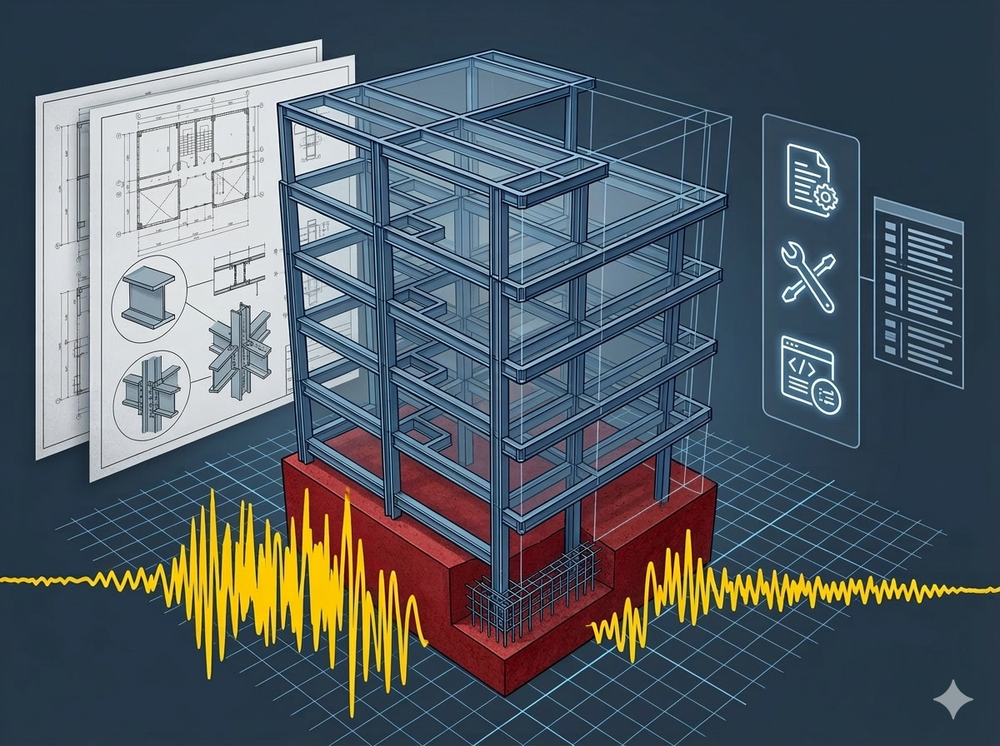
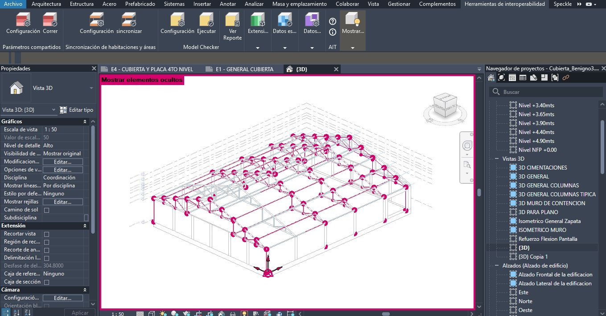
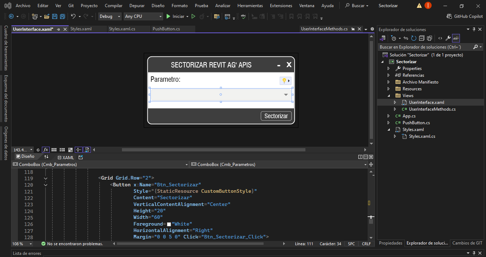

Portafolio profesional
Estructuras claras. Resultados confiables.
Ingeniero estructural con enfoque en diseño, análisis sísmico y automatización BIM. Desarrollo herramientas propias en Python y Revit API para mejorar la calidad de entregables técnicos.
Colombia · Disponible para proyectos

10+
proyectos estructurales
10+
Proyectos estructurales
7+
Herramientas desarrolladas
3
Áreas de especialización
NSR-10
Normativa Colombia
Especialización
Ingeniería moderna · análisis · automatización
Diseño estructural
Modelos estructurales, verificación sísmica, control de derivas y memorias técnicas bajo NSR-10.
Ver ingeniería →
BIM & coordinación
Flujos BIM con Revit y Navisworks, coordinación interdisciplinaria y estandarización de entregables.
Ver BIM →
Software & automatización
Scripts y herramientas en Python y Revit API para automatizar cálculos, reportes y extracción de datos.
Ver herramientas →